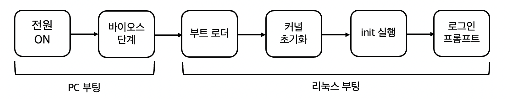
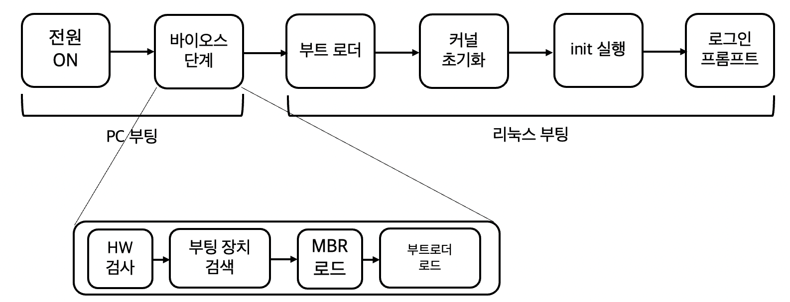
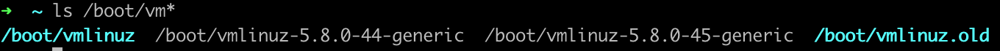
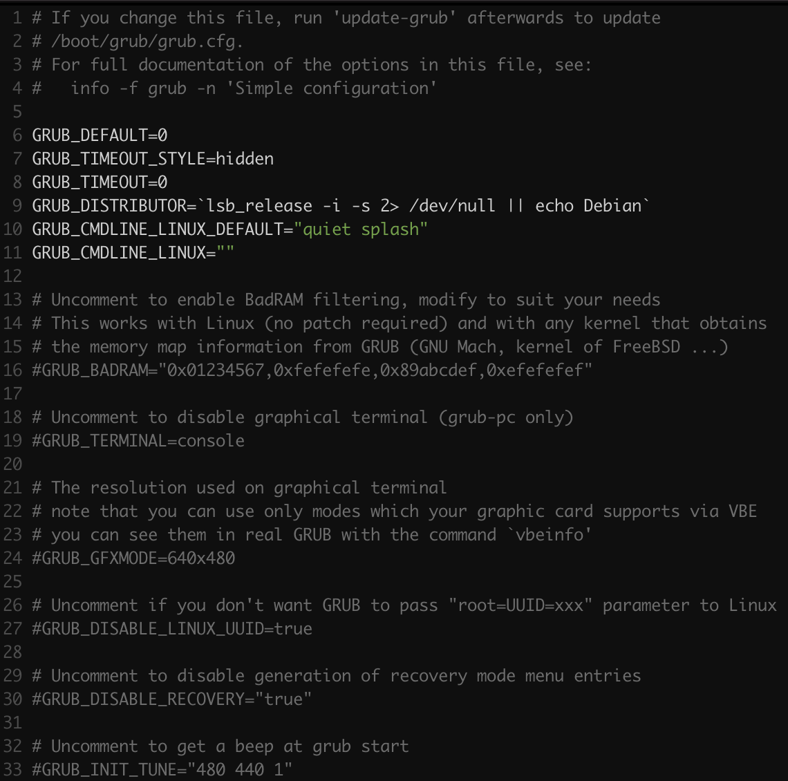
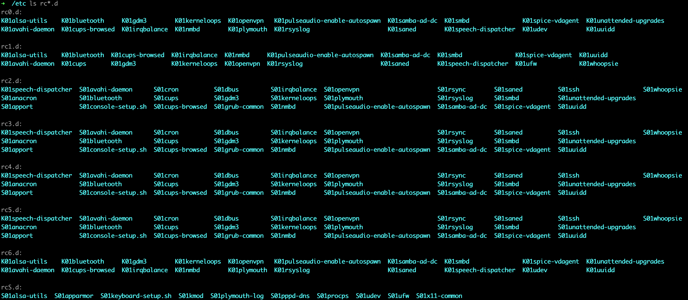
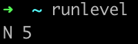

리눅스 부팅, init 스크립트 다루기 명령 - initctl, 런레벨, runlevel
리눅스 시스템의 부팅

바이오스 단계
- BIOS가 동작한다.
- ROM에 저장되어 있다.
- PC의 기본적인 HW(키보드, 디스크 등)을 체크
- 부팅 장치 선택 -> 부트 디스크의 첫 섹터의
512Byte 로딩-> 메모리- 이 부트 디스크의 첫 섹터의 512Byte를
마스터 부트 레코드(MBR): 디스크의 어느 파티션에 2차 부팅 프로그램(부트로더)가 있는지 정보가 저장
- 이 부트 디스크의 첫 섹터의 512Byte를
- 메모리에 로딩된 MBR
- 부트로더 정보가 저장되어 있음
- 부트로더를 메모리에 로딩

부트로더 단계
- MBR이 부트로더를 메모리에 로딩하면, 부트로더는 여러 OS 중 부팅할 OS 선택하게 메뉴 제공.
- 리눅스 부트로더: GRUB, LILO
- 부트로더:
리눅스 커널을메모리에 로딩하는 역할- 리눅스 커널은 /boot/vmlinuz-버전명 형태로 제공된다.

- 리눅스 커널은 /boot/vmlinuz-버전명 형태로 제공된다.
- 우분투 부트로더:
GRUB - 부팅 시 GRUB 메뉴를 출력하려면 /etc/default/grub파일을 수정해야 한다.
$ vi /etc/default/grub

- GRUB_HIDDEN_TIMEOUT=0 을 주석 처리
- GRUB_TIMEOUT=10은 GRUB메뉴가 출력되는 시간이다.
- 이 시간이 지나고 나면 부팅 과정이 자동으로 진행된다.
- 위 파일을 수정했다면
$ sudo update-grub수행하여 적용한다.
커널 초기화 단계
- 부트로더에 의해 로딩된
커널은 먼저 시스템에 연결된 메모리, 디스크, 키보드, 마우스 등의장치 검사 - fork를 사용하지 않고 생성되는
프로세스, 스레드 생성- 이들은 메모리 관리와 같은 커널의 여러 가지 동작을 수행한다.
[프로세스 명]으로 표기되어 있다.$ ps -ef | more UID PID PPID C STIME TTY TIME CMD root 1 0 0 15:26 ? 00:00:00 /sbin/init splash root 2 0 0 15:26 ? 00:00:00 [kthreadd] root 3 2 0 15:26 ? 00:00:00 [rcu_gp] root 4 2 0 15:26 ? 00:00:00 [rcu_par_gp] root 6 2 0 15:26 ? 00:00:00 [kworker/0:0H-kblockd] root 8 2 0 15:26 ? 00:00:00 [mm_percpu_wq] root 9 2 0 15:26 ? 00:00:00 [ksoftirqd/0] root 10 2 0 15:26 ? 00:00:00 [rcu_sched] root 11 2 0 15:26 ? 00:00:00 [migration/0] root 12 2 0 15:26 ? 00:00:00 [idle_inject/0] root 14 2 0 15:26 ? 00:00:00 [cpuhp/0] root 15 2 0 15:26 ? 00:00:00 [cpuhp/1] root 16 2 0 15:26 ? 00:00:00 [idle_inject/1] root 17 2 0 15:26 ? 00:00:00 [migration/1] root 18 2 0 15:26 ? 00:00:00 [ksoftirqd/1] root 20 2 0 15:26 ? 00:00:00 [kworker/1:0H-kblockd] root 21 2 0 15:26 ? 00:00:00 [kdevtmpfs] root 22 2 0 15:26 ? 00:00:00 [netns] root 23 2 0 15:26 ? 00:00:00 [rcu_tasks_kthre] root 24 2 0 15:26 ? 00:00:00 [rcu_tasks_rude_] root 25 2 0 15:26 ? 00:00:00 [rcu_tasks_trace] root 27 2 0 15:26 ? 00:00:00 [kauditd] root 28 2 0 15:26 ? 00:00:00 [khungtaskd] root 29 2 0 15:26 ? 00:00:00 [oom_reaper] root 30 2 0 15:26 ? 00:00:00 [writeback] root 31 2 0 15:26 ? 00:00:00 [kcompactd0] root 32 2 0 15:26 ? 00:00:00 [ksmd] root 33 2 0 15:26 ? 00:00:00 [khugepaged] root 79 2 0 15:26 ? 00:00:00 [kintegrityd] root 80 2 0 15:26 ? 00:00:00 [kblockd] root 81 2 0 15:26 ? 00:00:00 [blkcg_punt_bio] root 82 2 0 15:26 ? 00:00:00 [tpm_dev_wq] root 83 2 0 15:26 ? 00:00:00 [ata_sff] ---more---- 커널 프로세스가 생성되면 커널이 수행할 작업이 끝난다. 이제 init단계를 동작한다.
init 실행 단계
- 다양한 서비스를 동작한다.
- 부팅 메시지를 출력하려면
/etc/default/grub파일에서
GRUB_CMDLINE_LINUX_DEFAULT=”quiet splash”를 찾아 quiet를 삭제하고
sudo update-grub를 실행하면 된다. - 부팅 메시지는 부팅 후, dmesg 명령이나 more /var/lob/boot.log 명령으로 확인할 수 있다.
$ dmesg | more [ 0.000000] Booting Linux on physical CPU 0x0000000000 [0x410f0000] [ 0.000000] Linux version 5.8.0-45-generic (buildd@bos02-arm64-071) (gcc (Ubuntu 9.3.0-17ubuntu1~20.04) 9.3.0, GNU ld (GNU Binutils for Ubuntu) 2.34) #51~20.04.1-Ubuntu SMP Tue Feb 23 13:48:59 UTC 20 21 (Ubuntu 5.8.0-45.51~20.04.1-generic 5.8.18) [ 0.000000] Machine model: Parallels ARM Virtual Machine [ 0.000000] efi: EFI v2.70 by EDK II [ 0.000000] efi: ACPI 2.0=0xfc1a0000 SMBIOS 3.0=0xff870000 MEMATTR=0xfe45da98 MEMRESERVE=0xfc089d98 [ 0.000000] secureboot: Secure boot disabled [ 0.000000] cma: Reserved 32 MiB at 0x00000000fa000000 [ 0.000000] NUMA: No NUMA configuration found [ 0.000000] NUMA: Faking a node at [mem 0x0000000080000000-0x00000000fffeffff] [ 0.000000] NUMA: NODE_DATA [mem 0xffbe70c0-0xffbebfff] [ 0.000000] Zone ranges: [ 0.000000] DMA [mem 0x0000000080000000-0x00000000bfffffff] [ 0.000000] DMA32 [mem 0x00000000c0000000-0x00000000fffeffff] [ 0.000000] Normal empty [ 0.000000] Device empty [ 0.000000] Movable zone start for each node [ 0.000000] Early memory node ranges [ 0.000000] node 0: [mem 0x0000000080000000-0x00000000fc08ffff] [ 0.000000] node 0: [mem 0x00000000fc090000-0x00000000fc14ffff] [ 0.000000] node 0: [mem 0x00000000fc150000-0x00000000ff67ffff] [ 0.000000] node 0: [mem 0x00000000ff680000-0x00000000ffa5ffff] [ 0.000000] node 0: [mem 0x00000000ffa60000-0x00000000fffeffff] [ 0.000000] Zeroed struct page in unavailable ranges: 592 pages [ 0.000000] Initmem setup node 0 [mem 0x0000000080000000-0x00000000fffeffff] [ 0.000000] On node 0 totalpages: 524272 [ 0.000000] DMA zone: 4096 pages used for memmap [ 0.000000] DMA zone: 0 pages reserved [ 0.000000] DMA zone: 262144 pages, LIFO batch:63 [ 0.000000] DMA32 zone: 4096 pages used for memmap [ 0.000000] DMA32 zone: 262128 pages, LIFO batch:63 [ 0.000000] psci: probing for conduit method from DT. [ 0.000000] psci: PSCIv1.0 detected in firmware. [ 0.000000] psci: Using standard PSCI v0.2 function IDs (생략) - UNIX에서는 init 프로세스가 서비스를 실행시켰다.
- 따라서 init 프로세스는 PID 1번이다.
init 프로세스와 런레벨
upstart, init process
- init프로세스는 PID가 1번인 모든 프로세스의 조상
- 부팅과정에서 커널에 의해 실행, 각종 서비스를 제공하는 다른 프로세스를 동작시키는 역할
- 부팅과정에서 커널에 의해 실행, 각종 서비스를 제공하는 다른 프로세스를 동작시키는 역할
- init process
- 기존 UNIX에서 init 프로세스는 스크립트를 순차적으로 실행하여 다른 프로세스들을 동작시켰다.
- 최근 Ubuntu Linux에서는 이벤트 기반으로 동작하는 방식으로 init 프로세스를 대체하고 있다.
- Ubuntu는 자체적으로 개발한
upstart를 init 대신 사용한다. 다만 기존 UNIX 호환을 위해 init을 유지하고 있다. - init의 동작 방식이 바뀜에 따라 전통적으로 init 프로세스와 관련된 설정 파일인 /etc/inittab 파일은 우분투에서 사라졌다.
- Ubuntu는 자체적으로 개발한
- init process and scriptfile
- 기존 init과 새로운 upstart는 모두
프로세스를 실행, 종료하기 위해스크립트 파일을 사용한다.- 설치하는 서비스에 따라 upstart용 스크립트가 설치, init용 스크립트가 설치되기도 한다.
- 만약 /etc/init 디렉터리와 /etc/init.d 디렉터리에 같은 서비스에 대한 파일이 있다면 /etc/init 디렉터리 스크립트 파일이 우선적으로 적용된다.
- 기존 init과 새로운 upstart는 모두
$ ls /etc/init
whoopsie.conf
$ ls /etc/init.d
alsa-utils avahi-daemon cups grub-common keyboard-setup.sh openvpn procps samba-ad-dc spice-vdagent unattended-upgrades
anacron bluetooth cups-browsed hwclock.sh kmod plymouth pulseaudio-enable-autospawn saned ssh uuidd
apparmor console-setup.sh dbus irqbalance network-manager plymouth-log rsync smbd udev whoopsie
apport cron gdm3 kerneloops nmbd pppd-dns rsyslog speech-dispatcher ufw x11-common
- upstart가 사용하는 작업 파일은 /etc/init 디렉터리에 작업명.conf 형태로 구성되어 있다.
- init가 사용하는 작업 파일은 /etc/init.d 디렉터리에 있다.
- 만약 init, init.d 모두에 같은 서비스와 관련된 스크립트들이 있다면 /etc/init.d 디렉터리에 있는 스크립트 중 일부는 /lib/init/upstart-job에 대한 심벌릭 링크이다.
- upstart-job: 해당 서비스의 upstart 스크립트를 찾아서 실행시킨다.
$ ls -l /etc/init.d | grep upstart
- upstart-job: 해당 서비스의 upstart 스크립트를 찾아서 실행시킨다.
upstart, init script 시작하고 정지하기
- upstart와 init를 시작하고 정지하는 방법은 약간 다르다.
initctl - upstart 스크립트 제어
- upstart 스크립트 시작하고 정지하기
- upstart에서는 서비스를 제공하는 프로세스를 작업이라고 부르며 다음과 같은 두 가지 방법으로 작업을 시작하거나 정지한다.
$ initctl [start | stop | restart | reload | status] 작업명 $ [start | stop | restart | reload | status] 작업명 - 위 두 명령어 모두
initctl명령을 사용하는 것이다.$ ls -l /sbin | grep initctl -rwxr-xr-x 1 root root 179012 10월 10 00:05 initctl lrwxrwxrwx 1 root root 7 2월 20 21:12 reload -> initctl lrwxrwxrwx 1 root root 7 2월 20 21:12 restart -> initctl lrwxrwxrwx 1 root root 7 2월 20 21:12 start -> initctl lrwxrwxrwx 1 root root 7 2월 20 21:12 status -> initctl lrwxrwxrwx 1 root root 7 2월 20 21:12 stop -> initctl $
- upstart에서는 서비스를 제공하는 프로세스를 작업이라고 부르며 다음과 같은 두 가지 방법으로 작업을 시작하거나 정지한다.
initctl은 upstart 스크립트를 실행하기 위한 명령!- 서브 명령에 따라 서비스를 시작/ 정지
$ initctl [서브 명령] 작업명
서브 명령:
start 작업을 시작한다.
stop 작업을 정지한다.
reload 작업에 SIGHUP 시그널을 보낸다.
restart 작업을 다시 시작한다.
status 작업 상태를 출력한다.
list 알려진 작업의 목록을 현재 상태와 함께 출력한다.
사용 예:
initctl start cups
initctl stop cups
initctl list
service - 기존 init 스크립트 제어
service명령은 init 스크립트를 실행하기 위한 명령!- 서브 명령에 따라 서비스 시작/ 정비
$ service 스크립트 [서브 명령]
서브 명령:
start 스크립트에 지정한 start 부분을 실행한다.
stop 스크립트에 지정한 stop 부분을 실행한다.
reload 스크립트에 지정한 reload 부분을 실행한다.
restart 스크립트에 지정한 restart 부분을 실행한다.
status 스크립트에 지정한 status 부분을 실행한다.
사용 예:
service cups start
service cups stop
init 프로세스와 런레벨
- 기존의 init프로세스는 런 레벨(Run level)이라는 개념을 사용했다.
- 시스템의 단계를 일곱 개로 구분하여 정의하고 각 단계에 따라 쉘 스크립트를 실행, 이 단계들을 런레벨이라고 한다.
Fedora 런레벨
| 런 레벨 | 의미 | 관련 스크립트 위치 |
| 0 | 시스템 종료 | /etc/rc0.d |
| 1,S,s | 단일 사용자 모드 | /etc/rc1.d |
| 2 | 다중 사용자 모드(NFS를 실행하지 않음) | /etc/rc2.d |
| 3 | 다중 사용자 모드(NFS 포함) | /etc/rc3.d |
| 4 | 사용하지 않음(예비 번호) | /etc/rc4.d |
| 5 | 시스템 종료(페도라는 GUI 모드로 부팅) | /etc/rc5.d |
| 6 | 시스템 재시작 | /etc/rc6.d |
Ubuntu 런레벨
| 런 레벨 | 의미 | 관련 스크립트 위치 |
| 0 | 시스템 종료 | /etc/rc0.d |
| 1,S,s | 단일 사용자 모드 | /etc/rc1.d, /etc/rcS.d |
| 2 | 그래피컬 다중 사용자 모드+네트워킹(기본 값) | /etc/rc2.d |
| 3 | 런레벨 2와 동일 | /etc/rc3.d |
| 4 | 런레벨 2와 동일 | /etc/rc4.d |
| 5 | 런레벨 2와 동일 | /etc/rc5.d |
| 6 | 시스템 재시작 | /etc/rc6.d |
- 런레벨 3,4,5 번에 2번과 같다는 것을 통해 rc2.d 디렉터리와 rc3.d, rc4.d, rc5.d 디렉터리의 내용이 모두 같음을 알 수 있다.

- 위 표에서 런레벨별로 실행하는 스크립트 파일은 /etc/init.d 디렉터리에 있는 파일에 대한 심벌릭 링크 이다.
런레벨 변경하기
- init은 1번 프로세스의 이름이기도 하지만 init 프로세스의 런레벨을 바꾸는 명령으로 사용되기도 한다.
- init을 명령으로 사용하면, 실제로는 /sbin/
telinit이 실행된다. - init로 런레벨을 변경하기 위해서는 바꾸려는 런레벨을 숫자로 지정하면 된다.
- 예: 단일 사용자 모드로 전환하려면 init 1 이라고 하면 된다.
$ sudo init 1 - 위 명령을 실행하면 현재 그래픽 환경이었던 Console이 터미널 환경으로 바뀌면서 프롬프트가 출력되어야 한다.
그러나!! 현재 우분투는 init 1을 실행하면 아래 스플래시 화면이 출력되고 정지 상태가된다(bug) - 원래 시스템에 문제가 있을 경우 시스템을 런레벨 1(런레벨 S)로 변경하여 점검해야한다. (윈도우 안전모드)
다중 사용자 모드에서 시스템 관리자만 사용할 수 있는 단일 사용자 모드로 전환하는 것이다.
따라서 이 모드로 변환하기 전에 다른 사용자들이 로그아웃하도록 해야 한다.
- 예: 단일 사용자 모드로 전환하려면 init 1 이라고 하면 된다.
- init을 명령으로 사용하면, 실제로는 /sbin/
기본 런레벨 지정
- 우분투에서 부팅할 때 동작할 기본 런레벨은 /etc/init/rc-sysinit.conf 파일의 DEFAULT_RUNLEVEL변수에 지정되어 있다.
$ cat /etc/init/rc-sysinit.conf
(생략)
# Default runlevel, this may be overriden on the kernel command-line
# or by faking an old /etc/inittab entry
env DEFAULT_RUNLEVEL=2
(생략)
$
현재 런레벨 확인
runlevel명령
- N 5 라는 뜻은 부팅 때 런레벨 5로 부팅했음을 뜻한다.